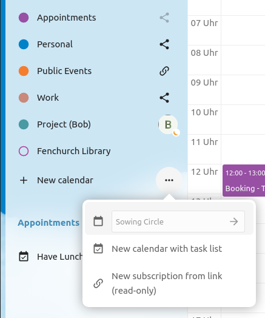
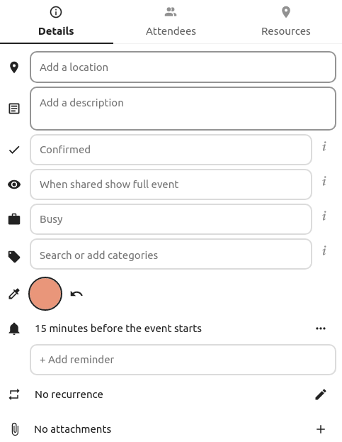
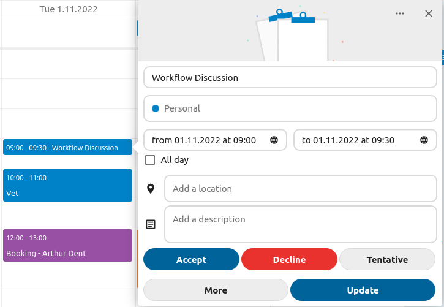
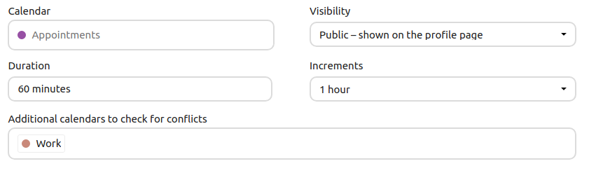
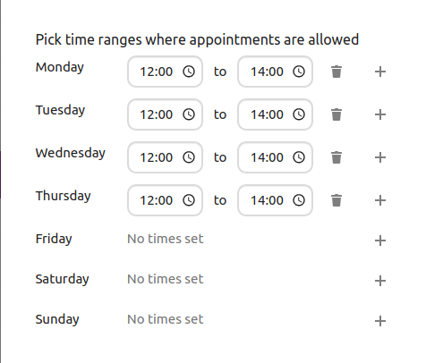
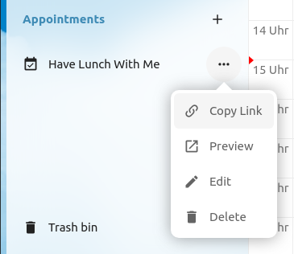
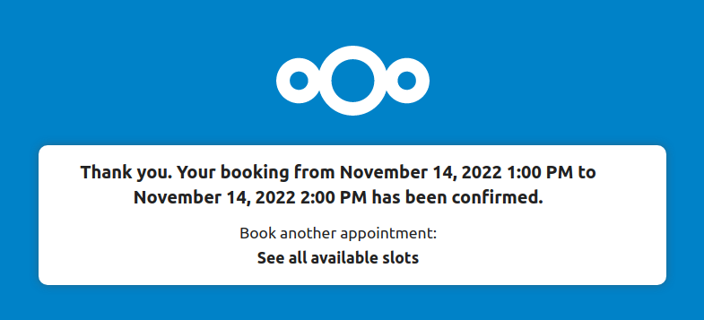

Používání aplikace Kalendář
Poznámka
Aplikace kalendář je nainstalovaná jako součást Nextcloud Hub už ve výchozím stavu, ale může být vypnutá. Požádejte o ní případně správce vámi využívané instance.
Aplikace Nextcloud Kalendář funguje podobně jako ostatní aplikace pro správu kalendářů, se kterými můžete synchronizovat své kalendáře a události, ukládané v Nextcloud.
Při prvním přístupu do aplikace Kalendář pro vás bude vytvořen výchozí prvotní kalendář.

Správa kalendářů
Vytvoření nového kalendáře
Pokud zamýšlíte vytvořit nový kalendář bez přenesení jakýchkoli dat z předchozího kalendáře, vytvoření nového kalendáře je cesta, kterou byste se měli vydat.

V levém postranním panelu klikněte na
+ Nový kalendář.Zadejte název pro nový kalendář, např. „Práce“, „Doma“ nebo „Marketingové plánování“.
Po kliknutí na zatržítko bude váš nový kalendář vytvořen a bude synchronizován napříč vašimi zařízeními, plněn novými událostmi a případně sdílen s vašimi přáteli a kolegy.
{kind=link}

Import kalendáře
Pokud chcete přenést svůj kalendář a v něm se nacházející události do vámi využívané instance Nextcloud, import je nejlepší způsob, jak to udělat.

Klikněte na ikonu nastavení označenou jako
Nastavení a importvlevo dole.Po kliknutí na
+ Naimportovat kalendářmůžete ze svého zařízení vybrat jeden či více souborů s kalendáři. které nahrát.Nahrávání může nějakou chvíli trvat, v závislosti na tom, jak rozsáhlý je kalendář, který importujete.
Poznámka
Aplikace Nextcloud Kalendář podporuje pouze s iCalendar kompatibilní .ics soubory, definované v normě RFC 5545.
Úprava, export nebo smazání kalendáře
Někdy také můžete chtít změnit barvu nebo celý název dříve naimportovaného nebo vytvořeného kalendáře. Můžete si ho také chtít exportovat na úložiště svého počítače nebo ho nadobro smazat.
Poznámka
Mějte na paměti, že smazání kalendáře nelze vzít zpět. Po smazání není způsob jak ho obnovit, pokud nemáte jeho lokální zálohu.

Klikněte na nabídku „tři tečky“ příslušného kalendáře.

Klikněte na Upravit název, Upravit barvu, Exportovat nebo Smazat.
Zveřejnění kalendáře
Kalendáře je možné zveřejňovat prostřednictvím veřejného odkazu a zpřístupnit je tak (pouze pro čtení) externím uživatelům. Veřejný odkaz je možné vytvořit otevřením nabídky sdílení pro kalendáře a kliknutím na « + » vedle « Odkaz pro sdílení ». Jakmile je vytvořen, můžete veřejný odkaz zkopírovat do schránky nebo ho poslat e-mailem.
Je zde také « zdroj. kód pro vkládání » který poskytuje HTML iframe, pro zabudování vašeho kalendáře do veřejných stránek.
Takto sdílet lze také několik kalendářů najednou a to přidáním jejich unikátních tokenů na konec odkazů pro vkládání. Jednotlivé tokeny naleznete na konci veřejného odkazu každého kalendáře. Úplná adresa bude vypadat podobně jako https://cloud.example.com/index.php/apps/calendar/embed/<token1>-<token2>-<token3>
Pokud chcete změnit výchozí zobrazení nebo datum vkládaného kalendáře, je třeba zadat URL adresu v podobě https://cloud.example.com/index.php/apps/calendar/embed/<token>/<view>/<date>. V této URL je třeba nahradit následující proměnné:
<token>za token kalendáře,<view>za jedno z``dayGridMonth`` (měsíční pohled),timeGridWeek(týdenní pohled),timeGridDay(denní pohled),listMonth(měsíční výpis),listWeek(týdenní výpis),listDay(denní výpis). Výchozí pohled jedayGridMontha běžně používaný výpis jelistMonth,<date>zanow(nyní) nebo jakékoli datum v následujícím formmátu<year>-<month>-<day>(např.2019-12-28).
Na veřejné stránce mohou uživatelé obdržet odkaz pro přidání si kalendáře a také si ho mohou přímo exportovat.
Přihlášení se k odebírání kalendáře
K odběru iCal kalendářů se můžete přihlásit přímo z vámi využívaného Nextcloud. Podporou tohoto interoperabilního standardu (norma RFC 5545) jsme Nextcloud kalendář učinili kompatibilním s Google kalendářem, Apple iCloud a mnoha dalšími kalendářovými servery, se kterými si můžete vyměňovat své kalendáře, včetně odkazů k odběru kalendářů, publikovaných na ostatních instancích Nextcloud, jak je popsáno výše.
Click on
+ New calendarin the left sidebarClick on
+ New subscription from link (read-only)Zadejte nebo vložte odkaz na sdílený kalendář, k odběru kterého se chcete přihlásit.
Dokončeno. Vaše přihlášení se k odběru budou pravidelně aktualizována.
Poznámka
Ve výchozím stavu jsou napojení načítána znovu každý týden. Správce vámi využívané instance toto nastavení mohl upravit.
Subscribe to a Holiday Calendar
Nové ve verzi 4.4.
You can subscribe to a read-only holiday calendar provided by Thunderbird.
Click on
+ New calendarin the left sidebarClick on
+ Add holiday calendarFind your country or region and click
Subscribe
Správa událostí
Vytvoření nové události
Události je možné vytvářet kliknutím do oblasti na kdy je událost plánována. V denním a týdenním pohledu na kalendář stačí kliknout, držet a přetáhnout kurzorem přes oblast, po kterou se událost má dít.

V měsíčním pohledu stačí pouze jeden klik do oblasti cílového dne.

Poté je možné zadat název události (např. Schůzka s Lukášem), zvolit kalendář, ve kterém chcete událost uložit (např. Osobní, Práce), zkontrolovat a upřesnit časový úsek nebo nastavit jako celodenní událost. Volitelně je možné zadat umístění a popis.
Pokud chcete upravit pokročilé podrobnosti, jako například Účastníci nebo Připomínky nebo chcete nastavit událost jako opakující se, klikněte na Další a v postranním panelu se otevře pokročilý editor.
Poznámka
Pokud chcete vždy otevírat pokročilý editor v postranním panelu namísto toho jednoduchého ve vyskakovacím okně, je možné v sekci aplikace Nastavení a import zaškrtnout Přeskočit zjednodušený editor událostí.
Kliknutím na modré tlačítko Vytvořit bude událost vytvořena.
Edit, duplicate or delete an event
If you want to edit, duplicate or delete a specific event, you first need to click on the event.
After that you will be able to re-set all event details and open the
advanced sidebar-editor by clicking on More.
Kliknutí na tlačítko Aktualizovat událost aktualizuje. Pro zrušení vámi provedených změn klikněte na ikonu zavření nahoře vpravo vyskakovacího dialogu nebo editoru v postranním panelu.
Pokud otevřete postranní pohled a kliknete na nabídku pod třemi tečkami vedle názvu události, budete mít možnost exportovat událost jako .ics soubor nebo ji odebrat z kalendáře.

Tip
Pokud smažete události, ocitnou se ve vašem koši. Odtamtud je možné nechtěně smazané události obnovovat.
You can also export, duplicate or delete an event from the basic editor.

Pozvání účastníků na událost
Do události můžete přidat účastníky a dát jim tak vědět, že jsou pozvaní. Obdrží e-mailové pozvání a budou moci potvrdit nebo zrušit svou účast na události. Účastníky mohou být ostatní uživatelé na vámi využívané instanci Nextcloud, kontakty ve vašem adresáři nebo přímo e-mailové adresy. Také je možné změnit stupeň účasti pro jednotlivé účastníky, nebo pro konkrétního účastníka vypnout informování e-mailem.

Změněno ve verzi 25: Attendee email response links no longer offer inputs to add a comment or invite additional guests to the event.
Tip
Při přidávání ostatních uživatelů Nextcloud coby účastníků do události je možné přistupovat k jejich informacím volný-zaneprázdněný (pokud je k dispozici), což vám pomůže zjistit jaké bude nejlepší časové okno pro vaši událost. Nastavte si svou pracovní dobu a dejte tak ostatním vědět, kdy jste k dispozici. Informace volný-zaneprázdněný je k dispozici pouze pro ostatní uživatele na té stejné instanci Nextcloud.
Výstraha
Pozvánky může posílat pouze vlastník kalendáře. Ti, kterým byl nasdílen toto nemohou, ať už mají právo zapisovat do kalendáře dané události či nikoli.
Výstraha
Je třeba, aby správce serveru nastavil e-mailový server (na kartě Základní nastavení), protože tento e-mail bude použit pro odeslání pozvánek.
Přiřazování místností a prostředků události
Obdobně jako účastníky, je možné do událostí přidávat také místnosti a prostředky. Systém zajistí, že každá místnost a prostředek bude zarezervována bez konfliktů. Jakmile uživatel místnost či prostředek přidá do události, zobrazí se jako že bylo přijato. Jakékoli budoucí události v překrývajícím se čase zobrazí místnost či prostředek jako že odmítnuto.
Poznámka
Místnosti a prostředky nejsou spravovány Nextcloud samotným a aplikace Kalendář neumožní přidat nebo změnit prostředek. Abyste je mohli používat jako uživatel je třeba, aby správce nainstalovat a nastavil podpůrné vrstvy pro prostředky.
Nastavení připomínek
Je možné nastavit připomínky kterými upozornit před výskytem události. V tuto chvíli jsou podporovány tyto metody upozorňování:
Upozornění e-mailem
Oznamování z Nextcloud
Připomínky je možné nastavit na čas vztažený k události nebo konkrétnímu datu.
{kind=link}

Poznámka
Upozornění obdrží pouze vlastník kalendáře a lidé nebo skupiny, kterým je kalendář nasdílen s právem k zápisu. Pokud jste nedostali žádné upozornění, ale myslíte si, že byste měli, správce vámi využívané instance toto také mohl pro tento server vypnout.
Poznámka
Pokud svůj kalendář synchronizujete s mobilními zařízeními nebo jinými klienty třetích stran, upozornění se mohou objevit i zde.
Volby přidání opakovaného
Událost je možné nastavit jako „opakující se“, takže se může dít každý den, týden, měsíc nebo rok. Je možné přidat konkrétní pravidla a nastavit tak, který den v týdnu se událost odehrává nebo komplexnější pravidla, jako například každou čtvrtou středu každého měsíce.
Také je možné zadat, kdy opakování skončí.

Koš
Pokud v aplikaci Kalendář smažete událost, úkol nebo kalendář, vaše data ještě nejsou pryč. Namísto toho budou shromážděny v koši. To vám poskytuje možnost vzít smazání zpět. Ovšem po uplynutí nějaké doby – výchozí je 30 dnů (správce vámi využívané instance může upravit) – budou tyto položky smazány natrvalo. Samozřejmě, pokud si to budete přát, můžete je sami smazat i dříve.

Tlačítko Vysypat koš odstraní veškerý obsah koše najednou.
Tip
Koš je dostupný pouze z aplikace Kalendář. Žádná z napojených aplikací k němu nemá přístup. Nicméně, události, úkoly a kalendáře, smazané z napojených aplikací také skončí v koši.
Odpovídání na pozvánky
Na pozvánky je možné odpovídat přímo v aplikaci. Klikněte na událost a vyberte stav své účasti. Na pozvánku je možné odpovědět přijetím, odmítnutím nebo nezávazným přijetím.
{kind=link}

Na pozvánky je možné odpovídat také z postranního panelu.

Dostupnost (pracovní doba)
Obecnou dostupnost nezávisle na naplánovaných událostech je možné nastavit v nastavení nástrojů pro podporu spolupráce v rámci Nextcloud. Tato nastavení ovlivní také zobrazení volný-zaneprázdněný, když plánujete schůzku s ostatními lidmi v Kalendáři. Někteří napojení klienti, jako třeba Thunderbird tato data zobrazí také.

Kalendář s narozeninami
Narozeninový kalendář je automaticky vytvářený kalendář, který automaticky získává data narozenin z vašich kontaktů. Jediný způsob, jak tento kalendář upravovat, je přes data narození u jednotlivých kontaktů. Tento kalendář není možné upravovat přímo z aplikace pro správu kalendáře.
Poznámka
Pokud nevidíte kalendář s narozeninami, váš správce ho mohl pro tento server vypnout.
Schůzky
Od Kalendáře verze 3, aplikace může vytvářet časová okna pro schůzky, které ostatní uživatelé Nextcloud (ale i lidé bez účtu na dané instanci) mohou rezervovat. Schůzky nabízejí podrobné ovládání toho, kdy jste případně volní pro setkání se. Toto může eliminovat potřebu posílat e-maily tam a zpět ohledně dohodnutí se na datu a času.
V této sekci budeme používat pojem organizátor pro osobu, která vlastní kalendář a nastavuje časová okna pro schůzky. Účastník je osoba, která si rezervuje některé z oken.
Vytváření nastavení pro schůzku
Jako organizátor schůzek otevřete hlavní webové rozhraní Kalendáře. V levém postranním panelu naleznete sekci pro schůzky, kde je možné otevřít dialog pro vytvoření nové.

One of the basic infos of every appointment is a title describing what the appointment is about (e.g. „One-on-one“ when an organizer wants to offer colleagues a personal call), where an appointment will take place and a more detailed description of what this appointment is about.

The duration of the appointment can be picked from a predefined list. Next, you can set the desired increment. The increment is the rate at which possible slots are available. For example, you could have one hour long slots, but you give them away at 30 minute increments so an attendee can book at 9:00AM but also at 9:30AM. Optional infos about location and a description give the attendees some more context.Every booked appointment will be written into one of your calendars, so you can chose which one that should be. Appointments can be public or private. Public appointments can be discovered through the profile page of a Nextcloud user. Private appointments are only accessible to the people who receive the secret URL.

Poznámka
Only slots that do not conflict with existing events in your conflict calendars will be shown to attendees.
Organizátor schůzky může zadat ve kterých časech týdne je možné si zarezervovat okno. Toto by měla být pracovní doba, ale také libovolné přizpůsobené naplánování.

Some appointments require time to prepare, e.g. when you meet at a venue and you have to drive there. The organizer can chose to select a time duration that must be free. Only slots that do not conflict with other events during the preparation time will be available. Moreover there is the option to specify a time after each appointment that has to be free. To prevent an attendee from booking too short notice it’s possible to configure how soon the next possible appointment might take place. Setting a maximum number of slots per day can limit how many appointments are possibly booked by attendees.

The configured appointment will then be listed in the left sidebar. Via the three dot menu, you can preview the appointment. You can copy the link to the appointment and share it with your target attendees, or let them discover your public appointment via the profile page. You can also edit or delete the appointment configuration.

Zarezervování schůzky
Stránka rezervace zobrazuje účastníkovi název, umístění, popis a délku schůzky. Pro označené dny zde bude seznam všech možných časových oken. Pro dny, kdy nejsou k dispozici žádná časová okna, je příliš mnoho konfliktů nebo když bylo dosaženo limitu už zarezervovaných schůzek, seznam může být prázdný.

For the booking, attendees have to enter a name and an email address. Optionally they can also add a comment.

When the booking was successful, a confirmation dialogue will be shown to the attendee.

To verify that the attendee email address is valid, a confirmation email will be sent to them.

Only after the attendee clicks the confirmation link from the email the appointment booking will be accepted and forwarded to the organizer.

The attendee will receive another email confirming the details of their appointment.

Poznámka
If a slot has not been confirmed, it will still show up as bookable. Until then the time slot might also be booked by another user who confirms their booking earlier. The system will detect the conflict and offer to pick a new time slot.
Práce se zarezervovanou schůzkou
Once the booking is done, the organizer will find an event in their calendar with the appointment details and the attendee.

If the appointment has the setting „Add time before event“ or „Add time after the event“ enabled, they will show up as separate events in the calendar for the organizer.

As with any other event that has attendees, changes and cancellations will trigger a notification to the attendee’s email.
Pokud si účastníci přejí zrušit schůzku, je třeba, aby kontaktovali organizátora, aby zrušil nebo dokonce smazal událost.
Create Talk room for booked appointments
You can create a Talk room directly from the calendar app for a booked appointment. The option can be found on the ‚Create appointment‘ modal. A unique link will be generated for every booked appointment and sent via the confirmation email when you check this option.